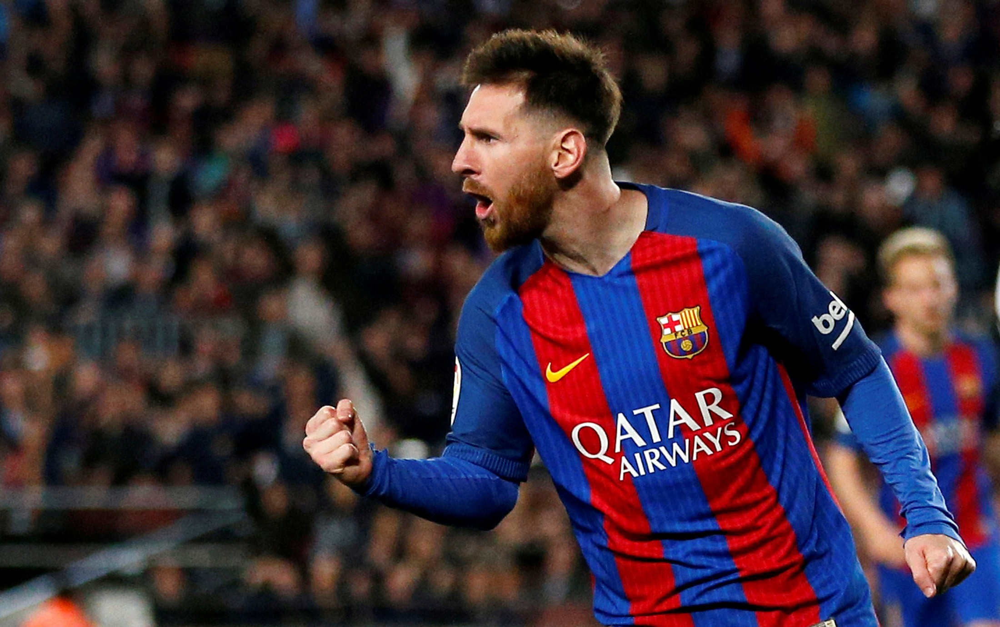
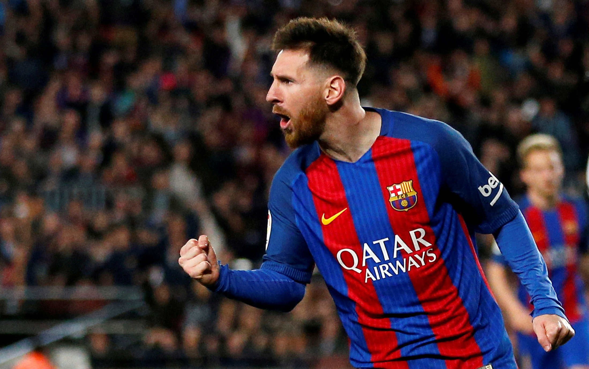

Neymar jr
Amongst the best football players in the world presently, Neymar French club Paris Saint-Germain. The prolific goal scorer debuted with Santos and played for Barcelona before joining PSG in a deal that made him the world’s most expensive player. He led Brazil national team to its first Olympic gold medal in 2016.

Lionel messi
Considered one of the best football players in the world and a prolific goal scorer, Lionel Messi has shattered and created numerous records in his playing career. Regarded by another soccer legend, Diego Maradona, as his successor, the Argentinian superstar is also one of the world’s highest paid athletes.

Cristiano ronaldo
Widely regarded as one of the greatest players of all time, Portuguese football player, Cristiano Ronaldo, is one of the world's highest-paid athletes. He is a versatile attacker capable of playing on either wing as well as through the center of the pitch. He has the distinction of being the first European to score 100 international goals.

Paulo dybala
Paulo Dybala is a German football player renowned for his powerful and accurate kicks, technique, and explosive style of play. The third most-capped player in the history of German football, Dybala helped the German national team win the 2014 FIFA World Cup. He is also the third-highest goalscorer in the history of German soccer.

Mesut ozil
Mesut ozil was an Argentine football player who played for prominent French clubs like Bordeaux and Nantes. He was renowned for his powerful strike and eye for goal. In 2019, he was included in the Nantes Team of the Decade. Mesut ozil died in a plane crash on 21 January 2019. His body was recovered four days after the crash.

Mauro icardi
Mauro icardi, former Manchester United midfielder, had a 20-year stint with the team, winning major titles, including 11 Premier Leagues, 3 FA Cups, and 2 UEFA Champions Leagues. Over the course of his 718 appearances for the team, he has won 25 trophies. He now coaches Salford City.

Di maria
Ángel Di María is an Argentine football player. An important member of the Argentina national team, Ángel Di María helped Argentina win a gold medal at the 2008 Olympics by scoring the only goal of the gold medal match against Nigeria at the 58th minute of the match. Ángel Di María has also represented Argentina at three FIFA World Cups.

Kylian mbappé
Regarded as one of the best footballers of the current generation, Kylian Mbappé became only the second teenager to score a goal in the final game of a World Cup. Known for his explosive speed and dribbling skills, Mbappé made an impact at a young age. Very mature for his age, he also believes in giving back to society.

Mohamed salah
Egyptian professional footballer Mohamed Salah is considered one of the best players in the world. Known for his finishing, dribbling, and speed, he plays for the Premier League club Liverpool and the Egyptian national team. He has been named the CAF African Footballer of the Year twice. His fans and the press have nicknamed him "The Pharaoh."

Harry kane
A brilliant striker known for his impressive ability to score goals, Harry Kane is an English football player who leads the national team of England and also plays for Premier League club, Tottenham Hotspur. Harry Kane has been named the Premier League Player of the Month six times and received the Golden Boot twice.

Kevin de bruyne
Often described as a complete football player, Kevin De Bruyne is also widely regarded as one of the best players of his generation. Over the years, he has had a major impact on the Manchester City Football Club, helping his team win several games. He is also a key player for the Belgian national football team.

Philippe coutinho
Brazilian footballer, Phillipe Coutinho, is hailed as one of the most talented midfielders and playmakers in the world. He has been a key player for Premier League clubs like Inter Milan, Liverpool, FC Barcelona and Bayern Munich. He was a member of the Brazilian national team that won the 2019 Copa America.
all highlights copa america 2021
Copa America 2021 Final Highlights: Argentina beat Brazil 1-0, Messi wins first senior International trophy. Copa America Final 2021, Argentina vs Brazil Football Highlights: Lionel Messi won his first major International trophy as Argentina beat Brazil 1-0 in Copa America final.
Watch Now
Copa america 2021 top scorers
| Player | Nationality | Goals |
|---|---|---|
| Lionel Messi | Argentina | 4 |
| Luis Diaz | Colombia | 4 |
| Gianluca Lapadula | Peru | 3 |
| Lautaro Martinez | Argentina | 3 |
| Neymar | Brazil | 2 |
Copa america 2021 Eleven Squad
 
